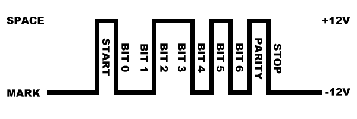
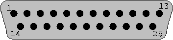
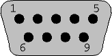
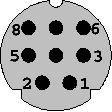

Serial Programming Guide for POSIX Operating Systems
5th Edition
Michael R. Sweet
Copyright 1994-1999, All Rights Reserved.
Перевод А.Гавва
2002 Львов
Данное руководство: "The Serial Programming Guide for POSIX Operating Systems" - покажет вам как правильно, эффективно и переносимо программировать последовательные порты на вашей рабочей станции UNIX® и/или PC. Каждая глава предусматривает примеры программ которые используют POSIX (Portable Standard for UNIX) функции управления терминалом, и которые, с минимальными изменениями, должны работать на IRIX®, HP-UX, SunOS®, Solaris®, Digital UNIX®, Linux®, и большинстве других UNIX-подобных операционных системах. Наибольшие различия, которые вы обнаружите, затрагивают имена файлов устройств последовательных портов и файлов блокировки.
Руководство содержит следующие главы и приложения:
Глава 1, Основы передачи данных по последовательным линиям
Эта глава является введением в передачу данных по последовательным линиям, RS-232 и другие стандарты которые используются для большинства компьютеров, а также о том как получить доступ к последовательным портам из C программы.
Что такое последовательная передача данных?
Компьютер передает информацию (данные) посылками в один или более битов за один раз. Последовательная передача подразумевает передачу данных посылкой в один бит. Последовательная передача данных применяется в большинстве сетевых устройств, клавиатурах, мышках, модемах и терминалах.
При последовательной передаче, каждое пересылаемое слово (байт или символ) данных посылается побитно. Каждый бит имеет состояние on (1) или off (0). Другие возможные термины: mark для состояния on и space для состояния off.
Очень часто скорость последовательной передачи данных выражается в количестве битов переданных за секунду (bits-per-second / "bps") или в бодах ("baud"). Это представляет только количество единиц и нулей которые могут быть переданы в течение одной секунды. На заре компьютерной техники, скорость передачи в 300 бод считалась достаточно быстрой, но в наше время компютеры могут обеспечить скорость передачи по RS-232 вплоть до 430,800 бод! Возможно, когда скорость передачи достигает 1,000, вы видите скорость показываемую в килободах, или kbps (т.е. 9.6k, 19.2k, и т.д.). Для скоростей выше 1,000,000 значения показываются в мегабодах, или Mbps (т.е. 1.5Mbps).
Когда говорят об устройствах последовательной передачи или о последовательных портах, их называют как Data Communications Equipment ("DCE") или Data Terminal Equipment ("DTE"). Различие между ними в том, что каждая сигнальная пара приема и передачи у них поменяна местами. При подключении двух DTE (или двух DCE) используется нуль-модемный кабель или адаптер, который меняет местами сигнальные пары приема и передачи.
RS-232 - это стандартный электрический интерфейс для последовательной передачи данных, объявленный Electronic Industries Association ("EIA"). Реально, RS-232 встречается с тремя различными особенностями (A, B, и C) каждая из которых объявляет различный диапазон напряжений для уровней on и off. Наиболее часто встречаемая разновидность - RS-232C, которая объявляет уровень mark bit (on) как напряжение между -3V и -12V, и уровень space bit (off) как напряжение между +3V и +12V. Спецификация RS-232C говорит, что эти сигналы могут распространяться на расстояние до 25 футов (8 метров). Обычно вы можете передавать сигналы немного дальше, но при этом понижается скорость передачи.
Кроме сигналов принимаемых и передаваемых данных, существуют другие сигналы, предусматривающие синхронизацию, состояние и квитирование:
Таблица 1 - Назначение выводов RS-232
|
Pin |
Description |
Pin |
Description |
Pin |
Description |
Pin |
Description |
Pin |
Description |
|
1 |
Earth Ground |
6 |
DSR - Data Set Ready |
11 |
Unassigned |
16 |
Secondary RXD |
21 |
Signal Quality Detect |
|
2 |
TXD - Transmitted Data |
7 |
GND - Logic Ground |
12 |
Secondary DCD |
17 |
Receiver Clock |
22 |
Ring Detect |
|
3 |
RXD - Received Data |
8 |
DCD - Data Carrier Detect |
13 |
Secondary CTS |
18 |
Unassigned |
23 |
Data Rate Select |
|
4 |
RTS - Request To Send |
9 |
Reserved |
14 |
Secondary TXD |
19 |
Secondary RTS |
24 |
Transmit Clock |
|
5 |
CTS - Clear To Send |
10 |
Reserved |
15 |
Transmit Clock |
20 |
DTR - Data Terminal Ready |
25 |
Unassigned |
Также, вы можете встретить еще два стандарта на последовательный интерфейс: RS-422 и RS-574. RS-422 использует более низкое напряжение и дифференциальные сигналы, что позволяет увеличить длину кабеля до 1000 футов (300 метров). RS-574 описывает 9-контактный последовательный PC разъем и напряжения.
Стандарт RS-232 описывает 18 различных сигналов для обеспечения последовательного обмена. Однако, только шесть из них реально доступны в окружении UNIX.
GND - Logic Ground (логическая земля)
Технически, логическая земля сигналом не является, без нее ни один из других сигналов не будет работать.
TXD - Transmitted Data (передача данных)
Сигнал TXD содержит данные передаваемые с вашей рабочей станции на компьютер или устройство, подключенное к другому концу линии (например, модем). Напряжение уровня mark (on) интерпретируется как значение 1, а напряжение уровня space (off) интерпретируется как значение 0.
RXD - Received Data (прием данных)
Сигнал RXD содержит данные передаваемые с компьютера или устройства, подключенного к другому концу линии, на вашу рабочую станцию. Также как и в случае сигнала TXD уровни mark и space интерпретируются как значения 1 и 0, соответственно.
DCD - Data Carrier Detect (обнаружение несущей удаленного модема/устройства)
Сигнал DCD принимается от компьютера или устройства, подключенного к другому концу линии. Уровень space (off) индицирует, что компьютер или устройство в текущий момент подключено к линии. Сигнал DCD не всегда используется и не всегда присутствует в реализации.
DTR - Data Terminal Ready (готовность терминала к передаче данных)
Сигнал DTR генерируется вашей рабочей станцией и указывает компьютеру или устройству, подключенному к другому концу линии, что вы готовы (уровень space (off)) или не готовы (уровень mark (on)) к передаче данных. Обычно сигдал DTR автоматически устанавливается в состояние готовности когда вы открываете (open) последовательный интерфейс вашей рабочей станции.
CTS - Clear To Send (разрешение передачи данных терминалу)
Сигнал CTS принимается с другого конца последовательной линии. Уровень space (off) индицирует готовность к посылке последовательных данных с вашей рабочей станции.
Обычно, CTS используется для управления потоком передачи данных от вашей рабочей станции на другой конец линии.
RTS - Request To Send (запрос на передачу)
Сигнал RTS, установленный в состояние уровня space (off) вашей рабочей станции, указывает о готовности вашей рабочей станции к пересылке данных.
Сигнал RTS, также как и сигнал CTS, используется для управления потоком передачи данных между вашей рабочей станцией и компьютером или устройством, подключенным к другому концу последовательной линии. Большинство рабочих станций удерживают этот сигнал в состоянии уровня space (off) все время.
Для того чтобы компьютер правильно "понимал" приходящие к нему последовательные данные, необходим какой-то способ определения где завершается передача одного символа и начинается передача нового символа. Это руководство описывает исключительно асинхронную передачу данных.
В асинхронном режиме, линия последовательной передачи данных остается в состоянии mark (1) пока нет передачи символа. start-бит предшествует передаче каждого символа и немедленно сопровождается битами передаваемого символа, одним опциональным битом четности, и одним или более stop-битами. start-бит всегда передается уровнем space (0), и указывает компьютеру, что доступны новые данные для последовательной передачи. Данные могут быть посланы или приняты в любой момент времени, поэтому передача называется асинхронной.
Рисунок 1 - Асинхронная передача данных

Опциональный бит четности - это простая сумма битов данных, которая индицирует что данные содержат или не содержат четное или нечетное число единичных битов. При при установке передачи четной четности (even parity), бит четности равен 0 если в переданом символе четное число единичных битов. При при установке передачи нечетной четности (odd parity), бит четности равен 0 если в переданных данных нечетное число единичных битов. Вы также можете встретить термины: space parity, mark parity, и no parity. Space parity подразумевает, что бит четности всегда равен 0. Mark parity подразумевает, что бит четности всегда равен 1. No parity подразумевает, что бит четности отсутствует и не передается.
Оставшиеся биты называются stop-битами. Может быть представлено 1, 1.5, или 2 стоп-бита между передаваемыми символами. Стоп-биты всегда имеют значение 1. Традиционно, стоп-биты использовались для того, чтобы дать компьютеру время для обработки предидущего переданного символа, но в настоящее время стоп-биты используются только для синхронизации передачи данных.
Формат передачи асинхронных данных обычно выражается как "8N1", "7E1", и т.д. Это указывает "8 битов данных, нет четности, 1 стоп-бит", и "7 битов данных, четная (even) четность, 1 стоп-бит" соответственно.
Что такое дуплексная и полудуплексная передача?
Full duplex (полный дуплекс) подразумевает, что компьютер может одновременно передавать и принимать данные - существует два раздельных канала данных (один для входящих данных, и один для исходящих).
Half duplex (полудуплекс) подразумевает, что компьютер не может одновременно передавать и/или принимать данные. Обычно это подразумевает, что существует только один канал передачи данных. Однако, это не подразумевает, что любой из сигналов RS-232 не используется. Скорее это подразумевает, что комуникационная линия использует какой-нибудь другой стандарт, отличный от RS-232, который не поддерживает полнодуплекснуюработу.
Управление потоком передачи данных (Flow Control)
Часто бывает необходимо регулировать поток данных при передаче между двумя последовательными интерфейсами. Это может быть вызвано ограничениями в промежуточной цепи последовательной связи, одном из последовательных интерфейсов или устройстве хранения информации. Обычно, для решения этой задачи, используются два метода.
Первый метод, часто называемый как "программное" управление потоком передачи данных ("software" flow control), использует специальные символы для начала (XON или DC1, восьмеричное значение 021) или остановки (XOFF или DC3, восьмеричное значение 023) передачи данных. Эти символы объявлены в American Standard Code for Information Interchange ("ASCII"). Эти коды полезны при передаче текстовой информации, однако они не могут быть использованы припередаче других типов данных без дополнительного специального программирования.
Второй метод, называемый как "аппаратное" управление потоком передачи данных ("hardware" flow control), вместо специальных символов использует сигналы CTS и RTS интерфейса RS-232. Приемник устанавливает CTS в уровень space (off) когда он готов к приему последующих данных и в уровень mark (on) когда он не готов. Также, передатчик устанавливает RTS в уровень space (off) когда он готов к передаче последующих данных. Поскольку аппаратный метод управления потоком использует различные сигналы он намного быстрее программного метода, которому требуется пересылка множества битов для выполнения той же задачи. Однако, CTS/RTS управление потоком не всегда поддерживается аппаратной частью или операционной системой.
Обычно, сигнал приема или посылки данных находится в состоянии уровня mark (on) до начала передачи нового символа. Если сигнал переходит в состояние уровня space (off) на длительный период времени, обычно от 1/4 до 1/2 секунды, то говорят о возникновении условия break.
Иногда break используется для переустановки (сброса) коммуникационной линии или изменения режима работы коммуникационного оборудования подобного модему. Глава 3, Управление модемом описывает это более подробно.
В отличие от асинхронных данных, синхронные данные появляются как постоянный поток битов. Для чтения данных линии, компьютер должен предоставлять или принимать общую синхронизацию битов, таким образом оба, приемник и передатчик, синхронизируются.
Даже при такой синхронизации компьютер должен каким-нибудь образом обозначать начало данных. Наиболее общий способ решения этой задачи - использование пакетного протокола передачи данных, подобного Serial Data Link Control ("SDLC") или High-Speed Data Link Control ("HDLC").
Каждый протокол объявляет определенные битовые последовательности для представления начала и конца пакета данных. Каждый протокол также описывает битовые последовательности которые используются при отсутствии данных. Эти битовые последовательности позволяют компьютеру обнаружить начало пакета данных.
Поскольку протоколы синхронной передачи не используют биты посимвольной синхронизации, они предоставляют как минимум 25% увеличение производительности по сравнению с асинхронной передачей данных, и пригодны для удаленной сетевой работы и конфигурирования более чем двух последовательных интерфейсов.
Не смотря на преимущество в скорости при синхронной передаче, большинство аппаратного обеспечения RS-232 не поддерживает синхронную передачу из-за дополнительных требований к аппаратному и программному обеспечению.
Доступ к последовательным портам
Подобно всем устройствам, UNIX предоставляет доступ к последовательным портам через файлы устройств (device files). Для доступа к последовательному порту вы просто открываете соответствующий файл устройства.
Каждый последовательный порт в системе UNIX имеет один или более файлов устройств (файлы в каталоге /dev ) ассоциированных с ним:
Таблица 2 - Файлы устройств последовательных портов
|
Система |
Порт 1 |
Порт 2 |
|
IRIX® |
/dev/ttyf1 |
/dev/ttyf2 |
|
HP-UX |
/dev/tty1p0 |
/dev/tty2p0 |
|
Solaris®/SunOS® |
/dev/ttya |
/dev/ttyb |
|
Linux® |
/dev/ttyS0 |
/dev/ttyS1 |
|
Digital UNIX® |
/dev/tty01 |
/dev/tty02 |
Открытие последовательного порта.
Поскольку последовательный порт - это файл, то для доступа используется функция open(2). Одна из проблем в UNIX заключается в том, что файлы устройств обычно не доступны для обычных пользователей. Решением подобной проблемы может служить изменение прав доступа к файлу при запуске вашей программы с привелегиями администратора (root), или маркировании вашей программы как set-userid таким образом, что она будет запущена с правами владельца файла устройства.
На данный момент мы будем предпологать, что файл устройства доступен всем пользователям. Код для открытия последовательного порта 1 на рабочей станции sgi® под управлением IRIX выглядит следующим образом:
Листинг 1 - Открытие последовательного порта.
#include <stdio.h> /* Стандартные объявления ввода/вывода */
#include <string.h> /* Объявления строковых функций */
#include <unistd.h> /* Объявления стандартных функций UNIX */
#include <fcntl.h> /* Объявления управления файлами */
#include <errno.h> /* Объявления кодов ошибок */
#include <termios.h> /* Объявления управления POSIX-терминалом */
/*
* 'open_port()' - Открывает последовательный порт 1.
*
* Возвращает файловый дескриптор при успехе или -1 при ошибке.
*/
int
open_port(void)
{
int fd; /* Файловый дескриптор для порта */
fd = open("/dev/ttyf1", O_RDWR | O_NOCTTY | O_NDELAY);
if (fd == -1)
{
/*
* Could not open the port.
*/
perror("open_port: Unable to open /dev/ttyf1 - ");
}
else
fcntl(fd, F_SETFL, 0);
return (fd);
}
Другие системы могут потребовать соответствующее имя для файла устройства, но остальной ко останется таким же самым.
Опции открытия
Вы можете заметить, что когда мы открывали файл устройства, мы использовали два дополнительных флага вместе с режимом чтение+запись:
fd = open("/dev/ttyf1", O_RDWR | O_NOCTTY | O_NDELAY);
Флаг O_NOCTTY говорит UNIX, что эта программа не хочет быть управляющим терминалом для этого порта. Если вы не укажете этого, то любой ввод (подобный сигналу абортирования от клавиатуры или что-нибудь подобное) будет затрагивать ваш процесс. Программы подобные getty(1M/8) используют эту возможность при старте логин-процесса, но обычно пользовательская программа не нуждается в таком поведении.
Флаг O_NDELAY говорит UNIX, что эта программа не заботится о состоянии сигнала DCD, т.е. что другой конец линии запущен. Если вы не укажете этот флаг, то ваш процесс "заснет" до тех пор пока на линии DCD не появится уровень space (off).
Запись в последовательный порт
Запись данных в порт достаточно проста - просто используйте системный вызов write(2) для посылки данных в порт:
n = write(fd, "ATZ\r", 4);
if (n < 0)
fputs("write() of 4 bytes failed!\n", stderr);
Функция write возвращает количество посланных байт или -1 при возникновении ошибки. Наиболее часто встречаемая ошибка - EIO, когда модем или линия передачи данных деактивирует сигнал Data Carrier Detect (DCD). Это условие будет присутствовать до тех пор пока вы не закроете порт.
Чтение из последовательного порта
Чтение данных с порта несколько сложнее. Когда вы работаете с портом в режиме не структурированного посимвольного обмена (raw data mode), каждый системный вызов read(2) будет каждый раз возвращать число символов реально прочитанных в буфер ввода. Если в текущий момент нет символов доступных для чтения, то вызов будет блокироваться (wait) до тех пор пока не появятся символы для чтения, или закончится счетчик таймаута, или обнаружится какая-нибудь ошибка. Функцию read можно выполнить так, что она вернет управление немедленно. Для этого она должна быть оформлена следующим образом:
fcntl(fd, F_SETFL, FNDELAY);
Опция FNDELAY указывает функции read возвращать 0 если нет символов доступных для чтения из последовательного порта. Для восстановления нормально поведения (с блокировками), необходимо вызвать fcntl() без опции FNDELAY:
fcntl(fd, F_SETFL, 0);
Это также выполняется после открытия последовательного порта с опцией O_NDELAY.
Закрытие последовательного порта
Для закрытия последовательного порта нужно использовать системный вызов close:
close(fd);
Закрытие последовательного порта также будет деактивировать сигнал DTR, что заставляет большинство модемов разорвать связь (hang up - повесить трубку).
Глава 2, Конфигурирование последовательного порта
Эта глава описывает как сконфигурировать последовательный порт из C используя POSIX termios интерфейс.
Большинство систем поддерживает терминальный (последовательный) интерфейс POSIX для изменения параметров, таких как скорость передачи, размер символов и т.д. Первое что вам необходимо сделать - это включить файл <termios.h>; это описывает структуру управления терминалом также как и управляющие функции POSIX.
Две наиболее важные функции POSIX: tcgetattr(3) и tcsetattr(3). Они, соответственно, позволяют получить и установить терминальные атрибуты. Вам необходимо предоставить указатель на структуру termios, которая содержит все доступные опции для последовательного интерфейса.
Таблица 3 - Поля структуры termios
|
Поле |
Описание |
|
c_cflag |
Управляющие опции |
|
c_lflag |
Опции линии |
|
c_iflag |
Опции ввода |
|
c_oflag |
Опции вывода |
|
c_cc |
Управляющие символы |
|
c_ispeed |
Скорость ввода в бодах (новый интерфейс) |
|
c_ospeed |
Скорость вывода в бодах (новый интерфейс) |
Поле c_cflag управляет скоростью передачи данных, количеством битов данных, четностью, стоп-битами, и установкой аппаратного управления потоком передачи данных. Существуют константы для всех поддерживаемых конфигураций.
Таблица 4 - Константы для поля c_cflag
|
Константа |
Описание |
|
CBAUD |
Битовая маска для скорости передачи в бодах |
|
B0 |
0 baud (drop DTR) |
|
B50 |
50 baud |
|
B75 |
75 baud |
|
B110 |
110 baud |
|
B134 |
134.5 baud |
|
B150 |
150 baud |
|
B200 |
200 baud |
|
B300 |
300 baud |
|
B600 |
600 baud |
|
B1200 |
1200 baud |
|
B1800 |
1800 baud |
|
B2400 |
2400 baud |
|
B4800 |
4800 baud |
|
B9600 |
9600 baud |
|
B19200 |
19200 baud |
|
B38400 |
38400 baud |
|
B57600 |
57,600 baud |
|
B76800 |
76,800 baud |
|
B115200 |
115,200 baud |
|
EXTA |
Внешняя синхронизация передачи |
|
EXTB |
Внешняя синхронизация передачи |
|
CSIZE |
Битовая маска для битов данных |
|
CS5 |
5 data bits |
|
CS6 |
6 data bits |
|
CS7 |
7 data bits |
|
CS8 |
8 data bits |
|
CSTOPB |
2 stop bits (1 otherwise) |
|
CREAD |
Enable receiver |
|
PARENB |
Enable parity bit |
|
PARODD |
Use odd parity instead of even |
|
HUPCL |
Hangup (drop DTR) on last close |
|
CLOCAL |
Local line - do not change "owner" of port |
|
LOBLK |
Block job control output |
|
CNEW_RTSCTS |
Enable hardware flow control (not supported on all platforms) |
Поле c_cflag содержит две опции которые всегда должны быть разрешены: CLOCAL и CREAD. Это обеспечит то, что ваша программа не станет 'владельцем' порта, что приводит к случайному получению сигналов управления заданиями или сигналов зависания, а также, что драйвер последовательного интерфейса будет читать приходящие байты данных.
Константы скорости передачи (CBAUD, B9600, и т.д.) используются для старых интерфейсов, которые не имеют полей c_ispeed и c_ospeed. Смотрите следующий параграф для ознакомления с функциями POSIX для установки скорости передачи.
Никогда не инициализируйте поле c_cflag (или любой другой флаг) непосредственно; вы всегда должны использовать битовые операторы AND, OR, или NOT для установки или очистки битовых полей. Различные версии операционных систем (и даже патчи) могут и используют биты по-разному, поэтому использование битовых операторов предотвратит вас от затирания битового флага необходимого в новом последовательном драйвере.
Установка скорости передачи
Скорость передачи сохраняется в разных местах, в зависимости от операционной системы. Более старые интерфейсы сохраняют величину скорости передачи в поле c_cflag, используя одну из констант показанных в таблице 4. Более новые реализации предоставляют поля c_ispeed и c_ospeed, которые содержат актуальное значение скорости передачи данных.
Функции cfsetospeed(3) и cfsetispeed(3) предназначены для установки скорости передачи данных в структуре termios вне зависимости от интерфейса операционной системы. Обычно, вам потребуется использовать следующий код для установки скорости передачи:
Листинг 2 - Установка скорости передачи.
struct termios options;
/*
* Получение текущих опций для порта...
*/
tcgetattr(fd, &options);
/*
* Установка скорости передачи в 19200...
*/
cfsetispeed(&options, B19200);
cfsetospeed(&options, B19200);
/*
* Разрешение приемника и установка локального режима...
*/
options.c_cflag |= (CLOCAL | CREAD);
/*
* Установка новых опций для порта...
*/
tcsetattr(fd, TCSANOW, &options);
Функция tcgetattr(3) заполняет структуру termios, которую вы ей указываете, текущими установками конфигурации последовательного порта. После, вы устанавливаете скорость передачи данных, разрешаете локальный режим и прием последовательных данных, мы выбираем новую конфигурацию используя tcsetattr(3). Константа TCSANOW указывает, что все изменения вступают в силу немедленно, без ожидания вывода данных для завершения посылки или ввода данных для завершения приема. Также существуют другие константы для ожидания завершения операций ввода и вывода, или для очистки буферов ввода и вывода.
Большинство систем не поддерживает различные скорости передачи для ввода и вывода, поэтому убедитесь в установке одинаковой скорости передачи для вводв и вывода в целях обеспечения переносимости.
Таблица 5 - Константы для tcsetattr
|
Константа |
Описание |
|
TCSANOW |
Произвести изменения немедленно, не дожидаясь завершения операций пересылки данных |
|
TCSADRAIN |
Подождать пока все данные будут переданы |
|
TCSAFLUSH |
Очистить буфера ввода/вывода и произвести изменения |
Установка размеров символов
В отличие от скорости передачи данных, согласованные функции для установки размера пересылаемых символов - отсутствуют. Вместо этого вы должны сначала маскировать биты установки размера символов перед тем как установить в них требуемое значение. Размер символов задается битами:
options.c_cflag &= ~CSIZE; /* Маскирование битов размера символов */
options.c_cflag |= CS8; /* Установка 8 битов данных */
Установка контроля четности
Также как и в случае с размером принимаемых символов, вы должны вручную устанавливать разрешение генерации бита четности и указывать тип проверки на четность. Драйвера последовательных устройств UNIX поддерживают учтановку проверки на четность, проверки на нечетность и отсутствие проверки на четность. Также, при более хитром кодировании, может быть симулирован пробел (space parity) бита четности.
options.c_cflag &= ~PARENB
options.c_cflag &= ~CSTOPB
options.c_cflag &= ~CSIZE;
options.c_cflag |= CS8;
options.c_cflag |= PARENB
options.c_cflag &= ~PARODD
options.c_cflag &= ~CSTOPB
options.c_cflag &= ~CSIZE;
options.c_cflag |= CS7;
options.c_cflag |= PARENB
options.c_cflag |= PARODD
options.c_cflag &= ~CSTOPB
options.c_cflag &= ~CSIZE;
options.c_cflag |= CS7;
options.c_cflag &= ~PARENB
options.c_cflag &= ~CSTOPB
options.c_cflag &= ~CSIZE;
options.c_cflag |= CS8;
Установка аппаратного управления потоком передаваемых данных
Некоторые версии UNIX поддерживают аппаратное управление потоком передаваемых данных используя сигнальные линии CTS (Clear To Send) и RTS (Request To Send). Если в вашей системе объявлены константы CNEW_RTSCTS или CRTSCTS, то такая поддержка, возможно, присутствует. Для активирования аппаратного управления потоком передаваемых данных необходимо сделать следующее:
options.c_cflag |= CNEW_RTSCTS; /* Также называется CRTSCTS */
Подобно вышеуказанному, для деактивирования аппаратного управления потоком передаваемых данных:
options.c_cflag &= ~CNEW_RTSCTS;
Поле локального режима c_lflag управляет как вводимые символы будут обрабатываться драйвером последовательного порта. В основном, вы будете конфигурировать поле c_lflag для канонического или неканонического (raw) ввода.
Таблица 6 - Константы для поля c_lflag
|
Константа |
Описание |
|
ISIG |
Разрешить SIGINTR, SIGSUSP, SIGDSUSP, и SIGQUIT сигналы |
|
ICANON |
Разрешить канонический ввод (иначе неканонический) |
|
XCASE |
Отображение uppercase \lowercase (устаревшее) |
|
ECHO |
Разрешить эхо вводимых символов |
|
ECHOE |
Символ эхо стирания как BS-SP-BS |
|
ECHOK |
Эхо NL после символа kill |
|
ECHONL |
Эхо NL |
|
NOFLSH |
Блокировка очистки приемных буферов после символа прерывания или выхода |
|
IEXTEN |
Разрешить расширенные функции |
|
ECHOCTL |
Эхо управляющих символов как ^char и удаления как ~? |
|
ECHOPRT |
Echo erased character as character erased |
|
ECHOKE |
BS-SP-BS entire line on line kill |
|
FLUSHO |
Output being flushed |
|
PENDIN |
Retype pending input at next read or input char |
|
TOSTOP |
Посылка SIGTTOU для фонового вывода |
Выбор канонического ввода
Канонический ввод - строчно-ориентированный. Вводимые символы помещаются в буфер который может интерактивно редактироваться пользователем до приема символа CR (carriage return) или LF (line feed).
При выборе этого режима вы нормально устанавливаете опции ICANON, ECHO и ECHOE:
options.c_lflag |= (ICANON | ECHO | ECHOE);
Выбор неканонического (Raw) ввода
Неканонический ввод не обрабатывается. Вводимый символ передается без изменений, так как он был принят. В основном вы сбрасываете опции ICANON, ECHO, ECHOE и ISIG приустановке неканонического ввода:
options.c_lflag &= ~(ICANON | ECHO | ECHOE | ISIG);
Замечание об эхо ввода
Никогда не разрешайте эхо ввода (ECHO, ECHOE) когда посылаете команды модему или другому компьютеру который производит эхо вводимых символов, поскольку вы получите цикл обратной связи между двумя последовательными интерфейсами!
Поле опций ввода c_iflag управляет любой обработкой ввода которая выполняется над символами принимаемыми из последовательного порта. Также как и в случае поля c_cflag, окончательное значение сохраняемое в c_iflag - это операция побитного OR требуемых опций.
Таблица 7 - Константы для поля c_iflag
|
Константа |
Описание |
|
INPCK |
Enable parity check |
|
IGNPAR |
Ignore parity errors |
|
PARMRK |
Mark parity errors |
|
ISTRIP |
Strip parity bits |
|
IXON |
Enable software flow control (outgoing) |
|
IXOFF |
Enable software flow control (incoming) |
|
IXANY |
Allow any character to start flow again |
|
IGNBRK |
Ignore break condition |
|
BRKINT |
Send a SIGINT when a break condition is detected |
|
INLCR |
Map NL to CR |
|
IGNCR |
Ignore CR |
|
ICRNL |
Map CR to NL |
|
IUCLC |
Map uppercase to lowercase |
|
IMAXBEL |
Echo BEL on input line too long |
Установка контроля четности ввода
Вы должны установить проверку контроля четности ввода если вы уже установили проверку четности в поле c_cflag (PARENB). Значащие константы для проверки четности ввода: INPCK, IGNPAR, PARMRK, и ISTRIP. В основном, вы будуте устанавливать INPCK и ISTRIP для разрешения контроля четности и отбрасывания бита четности:
options.c_iflag |= (INPCK | ISTRIP);
Опция IGNPAR несколько опасна, поскольку указывает драйверу последовательного порта игнорировать ошибки четности и передавать принятые данные как буд-то ошибок не было. Это может быть полезно при тестировании качества коммуникационной связи, но, в основном, не используется по практическим соображениям.
Опция PARMRK указывает 'маркировать' ошибки четности во входном потоке используя специальный символ. Если установлено IGNPAR, то вашей программе будет посылаться символ NUL (восьмеричное 000) перед каждым символом который получен с ошибкой четности. Иначе будут посылаться символы DEL (восьмеричное 177) и NUL вместе с ошибочно принятым символом.
Установка программно управляемого управления потоком передачи данных
Установка программно управляемого управления потоком передачи данных осуществляется использованием констант IXON, IXOFF и IXANY:
options.c_iflag |= (IXON | IXOFF | IXANY);
Для отмены программно управляемого управления потоком передачи данных вам необходимо просто замаскировать эти биты:
options.c_iflag &= ~(IXON | IXOFF | IXANY);
Символы XON (start data) и XOFF (stop data) описываются в массиве c_cc, который обсуждается ниже.
Поле c_oflag содержит опции фильтрации вывода. Подобно режимам ввода, вы можете выбрать обработанный или не обработанный (raw) вывод данных.
Таблица 8 - Константы для поля c_oflag
|
Константа |
Описание |
|
OPOST |
Postprocess output (not set = raw output) |
|
OLCUC |
Map lowercase to uppercase |
|
ONLCR |
Map NL to CR-NL |
|
OCRNL |
Map CR to NL |
|
NOCR |
No CR output at column 0 |
|
ONLRET |
NL performs CR function |
|
OFILL |
Use fill characters for delay |
|
OFDEL |
Fill character is DEL |
|
NLDLY |
Mask for delay time needed between lines |
|
NL0 |
No delay for NLs |
|
NL1 |
Delay further output after newline for 100 milliseconds |
|
CRDLY |
Mask for delay time needed to return carriage to left column |
|
CR0 |
No delay for CRs |
|
CR1 |
Delay after CRs depending on current column position |
|
CR2 |
Delay 100 milliseconds after sending CRs |
|
CR3 |
Delay 150 milliseconds after sending CRs |
|
TABDLY |
Mask for delay time needed after TABs |
|
TAB0 |
No delay for TABs |
|
TAB1 |
Delay after TABs depending on current column position |
|
TAB2 |
Delay 100 milliseconds after sending TABs |
|
TAB3 |
Expand TAB characters to spaces |
|
BSDLY |
Mask for delay time needed after BSs |
|
BS0 |
No delay for BSs |
|
BS1 |
Delay 50 milliseconds after sending BSs |
|
VTDLY |
Mask for delay time needed after VTs |
|
VT0 |
No delay for VTs |
|
VT1 |
Delay 2 seconds after sending VTs |
|
FFDLY |
Mask for delay time needed after FFs |
|
FF0 |
No delay for FFs |
|
FF1 |
Delay 2 seconds after sending FFs |
Выбор обработанного вывода
Обработанный вывод выбирается установкой опции OPOST в поле c_oflag:
options.c_oflag |= OPOST;
Из всех различных опций, возможно, вы будете использовать опцию ONLCR которая отображает символ новой строки в пару символов CR-LF. Остальные опции вывода скорее исторические и относятся к тому времени, когда строчные принтеры и терминалы не могли справиться с потоком последовательных данных.
Выбор необработанного (raw) вывода
Выбор необработанного (raw) вывода устанавливается сбросом опции OPOST в поле c_oflag:
options.c_oflag &= ~OPOST;
Когда опция OPOST сброшена, все остальные биты опций в поле c_oflag игнорируются.
Символьный массив c_cc содержит описания управляющих символов и параметры таймаутов. Константы объявлены для каждого элемента этого массива.
Таблица 9 - Управляющие символы в массиве c_cc
|
Константа |
Описание |
Комбинация клавиш |
|
VINTR |
Interrupt |
CTRL-C |
|
VQUIT |
Quit |
CTRL-Z |
|
VERASE |
Erase |
Backspace (BS) |
|
VKILL |
Kill-line |
CTRL-U |
|
VEOF |
End-of-file |
CTRL-D |
|
VEOL |
End-of-line |
Carriage return (CR) |
|
VEOL2 |
Second end-of-line |
Line feed (LF) |
|
VMIN |
Minimum number of characters to read |
|
|
VTIME |
Time to wait for data (tenths of seconds) |
Установка символов программного управления потоком передаваемых данных
Элементы VSTART и VSTOP массива c_cc содержат символы используемые для программного управления потоком передаваемых данных. Обычно они должны быть установлены в DC1 (восьмеричное 021) и DC3 (восьмеричное 023), что представляет стандарт ASCII как символы XON и XOFF.
Установка таймаутов чтения
Драйвера последовательного интерфейса UNIX предоставляют возможность специфицировать таймауты для символа и пакета. Два элемента массива c_cc используемых для указания таймаутов: VMIN и VTIME. Таймауты игнорируются в случае режима канонического ввода или когда для файла устройства установлена опция NDELAY при открытии файла open или с использованием fcntl.
VMIN определяет минимальное число символов для чтения. Если VMIN установлено в 0, то значение VTIME определяет время ожидания для каждого читаемого символа. Примечательно, что это не подразумевает, что вызов read для N байтов будет ждать поступление N символов. Тайаут произойдет в случае задержки приема любого одиночного символа и вызов read вернет число непосредственно доступных символов (вплоть до числа которое вы запросили).
Если VMIN не 0, то VTIME определяет время ожидания для чтения первого символа. Если первый символ прочитан в течение указанного времени, то любое чтение будет блокироваться (ждать) пока все число символов, указанное в VMIN, не будет прочитано. Таким образом, как только первый символ будет прочитан, драйвер последовательного интерфейса будет ожидать приема всего пакета символов (всего количества байтов указанного в VMIN). Если символ не будет прочитан за указанное время, то вызов read вернет 0. Этот метод позволяет вам указать последовательному интерфейсу возвращать 0 или N байтов. Однако, таймаут будет приниматься только для первого читаемого символа, таким образом, если драйвер по какой-либо причине 'потеряет' один символ из N-байтного пакета, то вызов readможет быть заблокирован ожиданием ввода дополнительного символа навсегда.
VTIME определяет величину времени ожидания ввода символа в десятых долях секунды. Если VTIME установлено в 0 (по умолчанию), то чтение будет заблокировано в ожидании на неопределенное время если для порта не была установлена опция NDELAY вызовом open или fcntl.
Эта глава содержит базовые понятия о телефонных коммуникациях посредством модулятора/демодулятора (модем). Представленные примеры используют де-факто стандартное множество "AT" команд модема.
Модемы - это устройства которые модулируют последовательные данные в частоты, которые могут быть переданы по аналоговым линиям подобным телефонным линиям или кабелям TV подключений. Стандартный телефонный модем преобразует последовательные данные в тона которые могут быть переданы по телефонным линиям; из-за скорости и сложности преобразования эти тона звучат подобно громкому визгу если вы их слушаете.
Телефонные модемы которые доступны в настоящее время могут передавать данные по телефонной линии со скоростью около 53,000 битов в секунду, или 53kbps. В дополнение, большинство модемов используют технологию сжатия данных которая может повысить скорость передачи некоторых типов данных вплоть до 100kbps.
Первый шаг в организации связи через модем - \это открытие и конфигурирование порта для неструктурированного (raw) ввода:
Листинг 3 - Конфигурирование порта для неструктурированного ввода.
int fd;
struct termios options;
/* открытие порта */
fd = open("/dev/ttyf1", O_RDWR | O_NOCTTY | O_NDELAY);
fcntl(fd, F_SETFL, 0);
/* получение текущих опций */
tcgetattr(fd, &options);
/* установка неструктурированного ввода, 1-секундный таймаут */
options.c_cflag |= (CLOCAL | CREAD);
options.c_lflag &= ~(ICANON | ECHO | ECHOE | ISIG);
options.c_oflag &= ~OPOST;
options.c_cc[VMIN] = 0;
options.c_cc[VTIME] = 10;
/* установка опций */
tcsetattr(fd, TCSANOW, &options);
Следующее что вам необходимо сделать, это установить связь с модемом. Наилучший способ сделать это посылкой модему "AT" команды. Это также позволяет 'хитрым' модемам определить какую скорость передачи данных вы используете. Когда модем корректно подключен и включен, он будет выдавать ответ "OK".
Листинг 4 - Инициализация модема.
int /* O - 0 = MODEM ok, -1 = MODEM bad */
init_modem(int fd) /* I - файл устройства последовательного порта */
{
char buffer[255]; /* буфер ввода */
char *bufptr; /* текущий символ в буфере */
int nbytes; /* число прочитанных байтов*/
int tries; /* число попыток */
for (tries = 0; tries < 3; tries ++)
{
/* посылка AT команды, сопровождаемой символом CR */
if (write(fd, "AT\r", 3) < 3)
continue;
/* чтение символов в наш строчный буфер до тех пор */
/* пока мы не получим CR или NL */
bufptr = buffer;
while ((nbytes = read(fd, bufptr, buffer + sizeof(buffer) - bufptr - 1)) > 0)
{
bufptr += nbytes;
if (bufptr[-1] == '\n' || bufptr[-1] == '\r')
break;
}
/* nul завершает строку и смотрим что мы получили ответ OK */
*bufptr = '\0';
if (strncmp(buffer, "OK", 2) == 0)
return (0);
}
return (-1);
}
Большинство модемов использует множество "AT" команд, называемых так поскольку каждая команда начинается с символов "AT". Каждая посылаемая команда это символьная строка начинающаяся в первом столбце с символов "AT" и сопровождаемая специфическими командами и символом возврата каретки (CR, или восьмеричное 015). После обработки команды модем будет отвечать одним из нескольких текстовых сообщений, в зависимости от команды.
ATD - Набор номера (Dial A Number)
Команда ATD производит набор указанного номера. В дополнение к цифрам и дефисам вы можете указать тип набора тональный ("T") или импульсный ("P"), паузу на одну секунду (","), и ожидание тональной посылки ("W"):
ATDT 555-1212
ATDT 18008008008W1234,1,1234
ATD T555-1212WP1234
Модем ответит одним из следующих сообщений:
NO DIALTONE
BUSY
NO CARRIER
CONNECT
CONNECT baud
ATH - Повесить трубку (Hang Up)
Команда ATH указывает модему повесить трубку. Поскольку модем должен быть в "командном режиме", вы, возможно, не будете использовать эту команду при нормальном телефонном вызове.
Также большинство модемов вешают трубку при сбросе сигнала DTR; вы можете выполнить это установкой скорости передачи данных в 0 как минимум на 1 секунду. Также, сброс сигнала DTR переводит модем в командный режим.
После того как модем успешно повесит трубку, он выдаст сообщение "NO CARRIER". Если модем останется на линии, то он выдаст сообщение "CONNECT" или "CONNECT baud".
ATZ - Сброс модема (Reset MODEM)
Команда ATZ производит сброс модема. Модем будет отвечать строкой "OK".
Первое и самое главное, не забудьте отключить эхо ввода. Эхо ввода приведет к циклу обратной связи между модемом и компьютером.
Второе, когда посылаете команды модему, вы должны завершать их символом возврата каретки (CR), а не символом новой строки (NL). Символьная константа C для CR - "\r".
И в заключение, когда работаете с модемом, убедитесь, что вы используете скорость передачи которую поддерживает модем. Хотя многие модемы выполняют автоматическое определение скорости передачи, некоторые имеют ограничения (общее ограничение 19.2kbps) которые вы должны соблюдать.
Глава 4, Низкоуровневое программирование последовательного порта
Эта глава описывает технику низкоуровневого программирования последовательного порта, использущую системные вызовы ioctl(2) и select(2).
В Главе 3, Конфигурирование последовательного порта мы использовали функции tcgetattr и tcsetattr для конфигурирования последовательного порта. В системе UNIX эти функции используют системный вызов ioctl(2).
Системный вызов ioctl принимает три аргумента:
int ioctl(int fd, int request, ...);
Аргумент fd указывает файловый дескриптор последовательного порта. Аргумент request является константой, описанной в файле <termios.h>, и, обычно, является следующим:
Таблица 10 - IOCTL Запросы к последовательному порту
|
Запрос |
Описание |
Функция POSIX |
|
TCGETS |
Получить текущие настройки последовательного порта. |
tcgetattr |
|
TCSETS |
Установить настройки последовательного порта немедленно. |
tcsetattr(fd, TCSANOW, &options) |
|
TCSETSF |
Установить настройки последовательного порта после очистки буферов ввода/вывода. |
tcsetattr(fd, TCSAFLUSH, &options) |
|
TCSETSW |
Установить настройки последовательного порта после того как буфера ввода/вывода освободятся. |
tcsetattr(fd, TCSADRAIN, &options) |
|
TCSBRK |
Послать на определенное время разрыв линии (break). |
tcsendbreak, tcdrain |
|
TCXONC |
Программное управление потоком данных. |
tcflow |
|
TCFLSH |
Очистка очередей ввода/вывода. |
tcflush |
|
TIOCMGET |
Вернуть состояние "модемных" битов. |
None |
|
TIOCMSET |
Установить состояние "модемных" битов. |
None |
|
FIONREAD |
Вернуть количество байтов в буфере ввода (приемный буфер). |
None |
Получение управляющих сигналов
Вызов TIOCMGET ioctl получает текущее состояние статусных битов "модема", которые включают все сигнальные линии RS-232, исключая RXD и TXD:
Таблица 11 - Константы контрольных сигналов
|
Константа |
Описание |
|
TIOCM_LE |
DSR (data set ready/line enable) |
|
TIOCM_DTR |
DTR (data terminal ready) |
|
TIOCM_RTS |
RTS (request to send) |
|
TIOCM_ST |
Secondary TXD (transmit) |
|
TIOCM_SR |
Secondary RXD (receive) |
|
TIOCM_CTS |
CTS (clear to send) |
|
TIOCM_CAR |
DCD (data carrier detect) |
|
TIOCM_CD |
Synonym for TIOCM_CAR |
|
TIOCM_RNG |
RNG (ring) |
|
TIOCM_RI |
Synonym for TIOCM_RNG |
|
TIOCM_DSR |
DSR (data set ready) |
Для получения статусных битов, необходимо вызвать ioctl с указателем на integer переменную для сохранения битов:
Листинг 5 - Получение статусных битов модема.
#include <unistd.h>
#include <termios.h>
int fd;
int status;
ioctl(fd, TIOCMGET, &status);
Установка управляющих сигналов
Вызов TIOCMSET ioctl устанавливает статусные биты "модема" описанные выше. Для сброса сигнала DTR вы можете выполнить следующее:
Листинг 6 - Сброс сигнала DTR вызовом TIOCMSET ioctl.
#include <unistd.h>
#include <termios.h>
int fd;
int status;
ioctl(fd, TIOCMGET, &status);
status &= ~TIOCM_DTR;
ioctl(fd, TIOCMSET, status);
Биты, которые могут быть установлены, зависят от операционной системы, драйвера и используемого модема. Обратитесь к документации на вашу операционную систему для более подробной информации.
Получение числа доступных байтов
Вызов FIONREAD ioctl получает число байтов в приемном буфере последовательного порта. Также как и в случае с TIOCMGET вам необходимо передать указатель на integer переменную для сохранения результата:
Листинг 7 - Получение числа байтов в приемном буфере.
#include <unistd.h>
#include <termios.h>
int fd;
int bytes;
ioctl(fd, FIONREAD, &bytes);
Это может быть полезно при опросе наличия данных от последовательного порта, когда ваша программа определяет количество байтов в приемном буфере до того как читать данные из последовательного порта.
Селекция ввода из последовательного порта
В то время как простое приложение может опрашивать или ждать данные приходящие от последовательного порта, большинство приложений не простые и, возможно, им неободимо управлять вводом от многих источников.
UNIX предоставляет эту возможность посредством системного вызова select(2). Этот системный вызов позволяет вашей программе проверять условия ввод, вывод или ошибки на одном и/или более дескрипторах. Файловые дескрипторы могут указывать на различные порты, обычные файлы, другие устройства, каналы или сокеты. Вы можете запрашивать проверу для ожидаемого ввода, ожидать ввод бесконечно, или осуществлять выход по таймауту через определенноый промежуток времени, делая системный вызов select очень гибко.
Большинство GUI Toolkits предоставляет интерфейс к вызову select; позже в этой главе мы обсудим библиотеку X Intrinsics ("Xt").
Системный вызов select принимает 5 аргументов:
int select(int max_fd, fd_set *input, fd_set *output, fd_set *error,
struct timeval *timeout);
Аргумент max_fd определяет высший численный файловый дескриптор в множествах input, output, и error. Аргументы input, output, и error определяют множества файловых дескрипторов для ожидания условий ввода, вывода или ошобки; укажите NULL для блокировки мониторинга определенных условий. Эти множества инициализируются использованием трех макросов:
FD_ZERO(fd_set);
FD_SET(fd, fd_set);
FD_CLR(fd, fd_set);
Макрос FD_ZERO полностью очищает множество. Макросы FD_SET FD_CLR, соответственно, добавляет и удаляет файловый дескриптор в/из множества.
Аргумент timeout определяет значение таймаута которое состоит из секунд (timeout.tv_sec) и милисекунд (timeout.tv_usec). Для опроса одного или более файловых дескриптора, установите секунды и милисекунды в нуль. Для бесконечног ожидания определите указатель таймаута (timeout pointer) как NULL.
Системный вызов select возвращает число файловых дескрипторов которые имеют ожидаемые условия, или -1 при ошибке.
Использование системного вызова select
Предположим: что мы читаем данные от последовательного порта и от сокета. Мы хотим проверить ввод от обоих файловых дескрипторов, и хотим уведомлять пользователя если в течение 10 секунд не было получено никаких данных. Для выполнения этого нам понадобится использовать системный вызов select:
Листинг 8 - Использование select для обработки ввода более чем от одного источника.
#include <unistd.h>
#include <sys/types.h>
#include <sys/time.h>
#include <sys/select.h>
int n;
int socket;
int fd;
int max_fd;
fd_set input;
struct timeval timeout;
/* Инициализация множества ввода */
FD_ZERO(input);
FD_SET(fd, input);
FD_SET(socket, input);
max_fd = (socket > fd ? socket : fd) + 1;
/* Инициализация структуры таймаута */
timeout.tv_sec = 10;
timeout.tv_usec = 0;
/* Выполнение select */
n = select(max_fd, &input, NULL, NULL, &timeout);
/* Смотрим, есть-ли ошибка */
if (n < 0)
perror("select failed");
else if (n == 0)
puts("TIMEOUT");
else
{
/* У нас есть ввод */
if (FD_ISSET(fd, input))
process_fd();
if (FD_ISSET(socket, input))
process_socket();
}
Вы должны заметить, что сначала мы проверяем значение которое вернул системный вызов select. Значения 0 и -1 выдают соодветственно предупреждающее сообщение и сообщение об ошибке. Значения больше 0 подразумевают, что на одном или более дескрипторах мы имеем данные ожидающие обработку.
Для определения того какой файловый дескриптор имеет ожидание ввода, мы используем макрос FD_ISSET для проверки множества ввода для каждого файлового дескриптора. Если флаг файлового дескриптора установлен, то условие присутствует (в нашем случае, ожидание ввода) и мы должны это как-то обработать.
Использование select с библиотекой X Intrinsics
Библиотека X Intrinsics предоставляет интерфейс к системному вызову select через функции XtAppAddInput(3x) и XtAppRemoveInput(3x):
int XtAppAddInput(XtAppContext context, int fd, int mask,
XtInputProc proc, XtPointer data);
void XtAppRemoveInput(XtAppContext context, int input);
Системный вызов select используется на внутреннем уровне для реализации таймаутов, и проверки ввода от X сервера. Эти функции могут быть использованы с любым Xt-образным инструментарием, включая Xaw, Lesstif и Motif.
Аргумент proc, функции XtAppAddInput, определяет функцию которая будет вызываться когда выбранное условие (или доступный ввод) присутствует на файловом дескрипторе. В предидущем примере вы могли указать функции process_fd или process_socket.
Поскольку Xt ограничивает ваш доступ к системному вызову select, вам понадобится реализовать таймауты через другой механизм, возможно через XtAppAddTimeout(3x).
Приложение A, Цоколевки (расположение выводов)
Это приложение предоставляет информацию о цоколевках большинства последовательных портов с которыми вы можете столкнуться.
RS-232 встречается в трех модификациях (A, B, C) и использует 25-контактный разъем (розетка):
Рисунок 2 - Разъем RS-232

Таблица 12 - RS-232 Signals
|
Вывод |
Описание |
Вывод |
Описание |
|
1 |
Earth Ground |
14 |
Secondary TXD |
|
2 |
TXD - Transmitted Data |
15 |
Transmit Clock |
|
3 |
RXD - Received Data |
16 |
Secondary RXD |
|
4 |
RTS - Request To Send |
17 |
Receiver Clock |
|
5 |
CTS - Clear To Send |
18 |
Unassigned |
|
6 |
DSR - Data Set Ready |
19 |
Secondary RTS |
|
7 |
GND - Logic Ground |
20 |
DTR - Data Terminal Ready |
|
8 |
DCD - Data Carrier Detect |
21 |
Signal Quality Detect |
|
9 |
Reserved |
22 |
Ring Detect |
|
10 |
Reserved |
23 |
Data Rate Select |
|
11 |
Unassigned |
24 |
Transmit Clock |
|
12 |
Secondary DCD |
25 |
Unassigned |
|
13 |
Secondary CTS |
|
|
RS-422 также использует 25-контактный разъем (розетка), но с различающимися сигналами:
Рисунок 3 - Разъем RS-422
Таблица 13 - Сигналы RS-422
|
Вывод |
Описание |
Вывод |
Описание |
|
1 |
Earth Ground |
14 |
TXD+ |
|
2 |
TXD- - Transmitted Data |
15 |
Transmit Clock- |
|
3 |
RXD- - Received Data |
16 |
RXD+ |
|
4 |
RTS- - Request To Send |
17 |
Receiver Clock- |
|
5 |
CTS- - Clear To Send |
18 |
Unassigned |
|
6 |
DSR - Data Set Ready |
19 |
RTS+ |
|
7 |
GND - Logic Ground |
20 |
DTR- - Data Terminal Ready |
|
8 |
DCD- - Data Carrier Detect |
21 |
Signal Quality Detect |
|
9 |
Reserved |
22 |
Unassigned |
|
10 |
Reserved |
23 |
DTR+ |
|
11 |
Unassigned |
24 |
Transmit Clock+ |
|
12 |
DCD+ |
25 |
Receiver Clock+ |
|
13 |
CTS+ |
|
|
Интерфейс RS-574 используется исключительно производителями PC и использует 9-штырьковый разъем (вилка):
Рисунок 4 - Разъем RS-574

Таблица 14 - Сигналы RS-574 (IBM PC/AT)
|
Вывод |
Описание |
Вывод |
Описание |
|
1 |
DCD - Data Carrier Detect |
6 |
Data Set Ready |
|
2 |
RXD - Received Data |
7 |
RTS - Request To Send |
|
3 |
TXD - Transmitted Data |
8 |
CTS - Clear To Send |
|
4 |
DTR - Data Terminal Ready |
9 |
Ring Detect |
|
5 |
GND - Logic Ground |
|
|
Старое оборудование SGI использует 9-штырьковый разъем (розетка). В отличие от RS-574, цоколевка SGI больше соответствует RS-232:
Рисунок 5 - 9-штырьковый разъем SGI
Таблица 15 - Сигналы 9-штырькового разъема SGI
|
Вывод |
Описание |
Вывод |
Описание |
|
1 |
Earth Ground |
6 |
DSR - Data Set Ready |
|
2 |
TXD - Transmitted Data |
7 |
GND - Logic Ground |
|
3 |
RXD - Received Data |
8 |
DCD - Data Carrier Detect |
|
4 |
RTS - Request To Send |
9 |
DTR - Data Terminal Ready |
|
5 |
CTS - Clear To Send |
|
|
Рабочие станции SGI Indigo, Indigo2, и Indy используют 8-контактный MiniDIN разъем Apple для своих последовательных портов:
Рисунок 6 - 8-контактный разъем SGI

Таблица 16 - Сигналы 8-контактного разъема SGI
|
Вывод |
Описание |
Вывод |
Описание |
|
1 |
DTR - Data Terminal Ready |
5 |
RXD - Received Data |
|
2 |
CTS - Clear To Send |
6 |
RTS - Request To Send |
|
3 |
TXD - Transmitted Data |
7 |
DCD - Data Carrier Detect |
|
4 |
GND - Logic Ground |
8 |
GND - Logic Ground |
Приложение B, Управляющие коды ASCII
Это приложение перечисляет управляющие коды ASCII и их названия.
Следующие символы ASCII используются в целях управления:
Таблица 17 - Управляющие коды ASCII
|
Name |
Binary |
Octal |
Decimal |
Hexadecimal |
|
NUL |
00000000 |
000 |
0 |
00 |
|
SOH |
00000001 |
001 |
1 |
01 |
|
STX |
00000010 |
002 |
2 |
02 |
|
ETX |
00000011 |
003 |
3 |
03 |
|
EOT |
00000100 |
004 |
4 |
04 |
|
ENQ |
00000101 |
005 |
5 |
05 |
|
ACK |
00000110 |
006 |
6 |
06 |
|
BEL |
00000111 |
007 |
7 |
07 |
|
BS |
00001000 |
010 |
8 |
08 |
|
HT |
00001001 |
011 |
9 |
09 |
|
NL |
00001010 |
012 |
10 |
0A |
|
VT |
00001011 |
013 |
11 |
0B |
|
NP, FF |
00001100 |
014 |
12 |
0C |
|
CR |
00001101 |
015 |
13 |
0D |
|
SO |
00001110 |
016 |
14 |
0E |
|
SI |
00001111 |
017 |
15 |
0F |
|
DLE |
00010000 |
020 |
16 |
10 |
|
XON, DC1 |
00010001 |
021 |
17 |
11 |
|
DC2 |
00010010 |
022 |
18 |
12 |
|
XOFF, DC3 |
00010011 |
023 |
19 |
13 |
|
DC4 |
00010100 |
024 |
20 |
14 |
|
NAK |
00010101 |
025 |
21 |
15 |
|
SYN |
00010110 |
026 |
22 |
16 |
|
ETB |
00010111 |
027 |
23 |
17 |
|
CAN |
00011000 |
030 |
24 |
18 |
|
EM |
00011001 |
031 |
25 |
19 |
|
SUB |
00011010 |
032 |
26 |
1A |
|
ESC |
00011011 |
033 |
27 |
1B |
|
FS |
00011100 |
034 |
28 |
1C |
|
GS |
00011101 |
035 |
29 |
1D |
|
RS |
00011110 |
036 |
30 |
1E |
|
US |
00011111 |
037 |
31 |
1F |